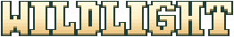
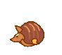
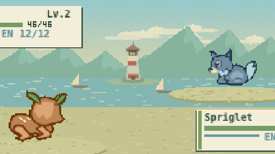
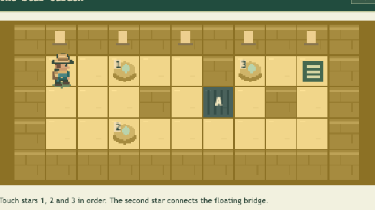

№ 001Grove
Spriglet
A leaf-eared fawn that restores health and builds its defences.
Evolution
A creature-collecting RPG

The Asterra LeagueTake your first steps as a field researcher in Asterra. Befriend creatures that carry the light of the wild, and follow their trail to a sleeping observatory.
Free to play · Desktop & touch · No account needed
The Field Atlas
Three travelling cases wait in Brinewick Village. Choose one companion to begin. You can find the other two later.
A leaf-eared fawn that restores health and builds its defences.

A warm-bellied burrower that withstands physical hits and strikes back hard.

A quick shorebird that outpaces its opponents with focused attacks.
Across Asterra
The Stilllight Society is quieting the region’s natural energy. Follow the changes in its wildlife from the coast to the celestial ruins.

Spot creatures in the overworld. Return with vine cutters, climbing gear or water equipment to reach the habitats you passed the first time.

Weaken a wild creature, then use a Lumen Capsule. Mix elements and moves across your party, and recover together at a lodge.

Solve eight gym puzzles and face their leaders. After the observatory finale, four specialists and a champion stand between you and the title.
Expedition manual
Open the game, select Begin expedition and meet Researcher Oriel.
Play WildlightWalk with WASD or the arrow keys. Press E or Enter to interact, M for the map, Tab for your party and Esc for the expedition menu.
Click or tap a destination to walk there. Touch devices also have a directional pad and an interaction button.
Each turn, choose a move, switch your active creature or use an item. Check the element matchup and your available energy. Lower a wild creature’s health or inflict a status condition to improve your capsule’s chances.
The game autosaves in this browser at safe milestones. Open Expedition menu → Save → Export backup to keep a copy or carry your team to another device. Use Import backup to restore it.
Download the standalone game and open it in a modern browser. To continue a web expedition offline, export your save first and import it in the downloaded game.